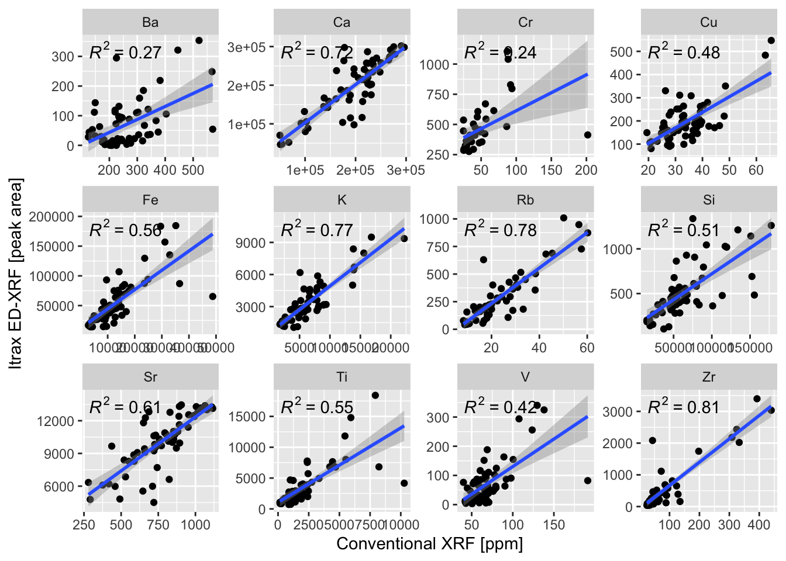
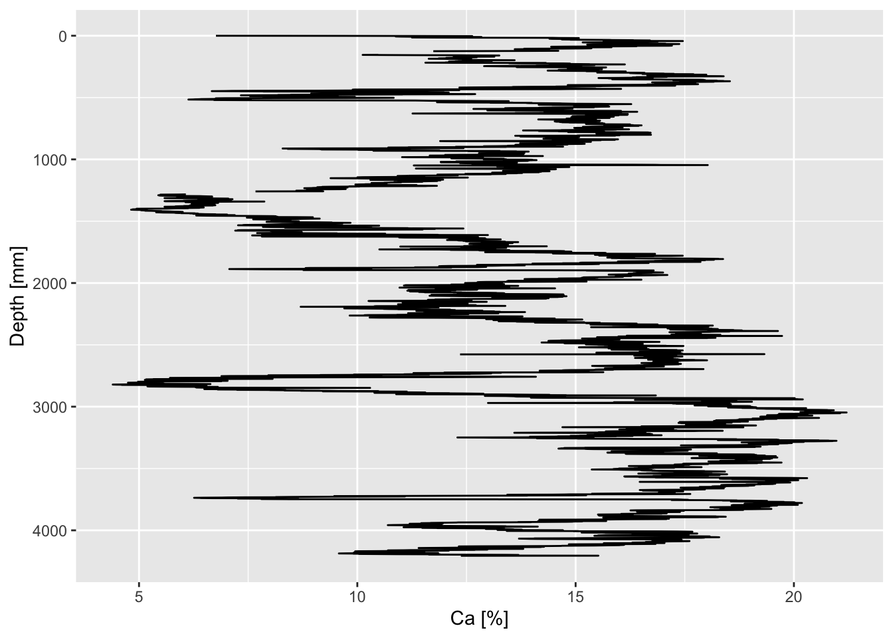
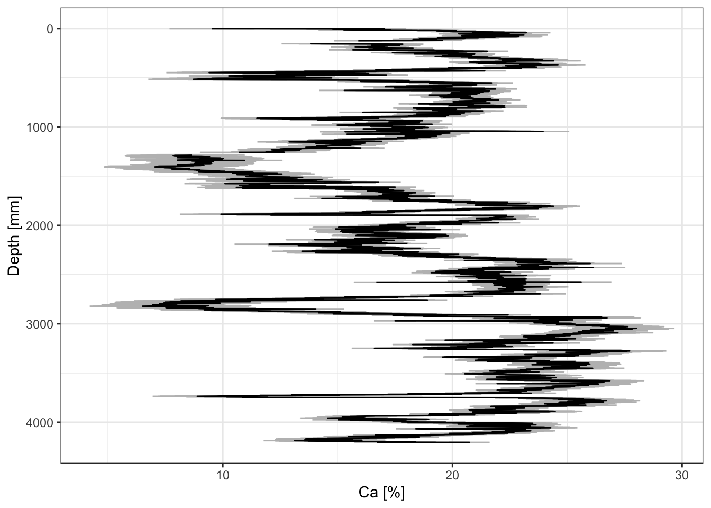

7.4 Linear Methods
We’ll use our xrf and hhxrf data sets to create linear models of all the variables of interest. They must be combined using pivot_longer(). The plot indicates that some, but not all variables are suitable for calibration.
full_join(
hhxrf %>%
select(any_of(c(elementsList, "SampleID"))) %>%
pivot_longer(any_of(elementsList),
values_to = "hhxrf",
names_to = "element"),
xrf %>%
select(any_of(c(elementsList, "SampleID"))) %>%
pivot_longer(any_of(elementsList),
values_to = "xrf",
names_to = "element"),
by = c("SampleID", "element")
) %>%
filter(element %in% myElements) %>%
drop_na() %>%
ggplot(aes(x = hhxrf, y = xrf)) +
geom_point() +
ggpmisc::stat_poly_line() +
ggpmisc::stat_poly_eq() +
facet_wrap(vars(element),
scales = "free") +
xlab("Conventional XRF [ppm]") +
ylab("Itrax ED-XRF [peak area]")
To apply these calibration models to our existing data, we first need to save the models created using lm(). We don’t force the intercept through zero (e.g. hhxrf ~ 0 + xrf) because of background (high baseline) conditions that may be present.
calibration <- full_join(
hhxrf %>%
select(any_of(c(elementsList, "SampleID"))) %>%
pivot_longer(any_of(elementsList),
values_to = "hhxrf",
names_to = "element"),
xrf %>%
select(any_of(c(elementsList, "SampleID"))) %>%
pivot_longer(any_of(elementsList),
values_to = "xrf",
names_to = "element"),
by = c("SampleID", "element")
) %>%
mutate(element = as_factor(element)) %>%
drop_na()
calibration <- calibration %>%
group_by(element) %>%
group_split() %>%
lapply(function(x){lm(data = x, hhxrf~xrf)}) %>%
`names<-`(calibration %>%
group_by(element) %>%
group_keys() %>%
pull(element))We can see the performance of our model using summary(), for example:
## Warning: In 'Ops' : non-'errors' operand automatically coerced to an 'errors'
## object with no uncertainty##
## Call:
## lm(formula = hhxrf ~ xrf, data = x)
##
## Residuals:
## Min 1Q Median 3Q Max
## -90606 -20066 1609 20785 76404
##
## Coefficients:## Warning in printCoefmat(coefs, digits = digits, signif.stars = signif.stars, :
## NAs introduced by coercion## Estimate Std. Error t value Pr(>|t|)
## (Intercept) 51588.943250000(4312) 12535.14(6691) 4.11600(2242) 0.000124 ***
## xrf 0.729260000(3663) 0.0598700(3241) 12.18200(6531) < 2e-16 ***
## ---
## Signif. codes: 0 '***' 0.001 '**' 0.01 '*' 0.05 '.' 0.1 ' ' 1
##
## Residual standard error: 33200(200) on 58 degrees of freedom
## Multiple R-squared: 0.719, Adjusted R-squared: 0.7141
## F-statistic: 148.4 on 1 and 58 DF, p-value: < 2.2e-16Now we can use predict() to apply those models to the data.
CD166_19_xrf %>%
mutate(Ca_ppm =
predict(calibration$Ca,
newdata =
CD166_19_xrf %>%
select(Ca) %>%
rename(xrf = Ca))
) %>%
ggplot(aes(x = Ca_ppm, y = depth)) +
geom_lineh() +
scale_y_reverse() +
scale_x_continuous(labels = function(x){x/10000}) +
ylab("Depth [mm]") +
xlab("Ca [%]")## Warning: Removed 3 rows containing missing values or values outside the scale range
## (`geom_lineh()`).
We can also extract the confidence intervals, for example:
predict(calibration$Ca,
newdata =
CD166_19_xrf %>%
select(Ca) %>%
rename(xrf = Ca),
interval = "confidence",
level = 0.95,
type = "response") %>%
as_tibble() %>%
mutate(depth = CD166_19_xrf$depth) %>%
ggplot(aes(y = depth, x = fit)) +
geom_errorbar(aes(xmin = lwr, xmax = upr), col = "grey") +
geom_lineh() +
scale_x_continuous(labels = function(x){x/10000},
name = "Ca [%]") +
scale_y_reverse(name = "Depth [mm]") +
theme_paleo() 